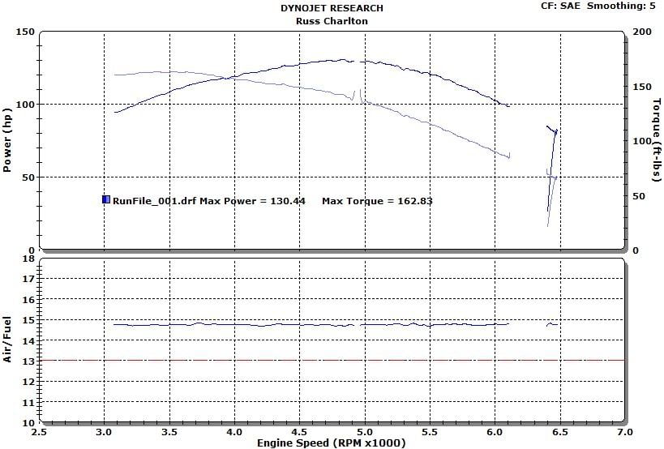
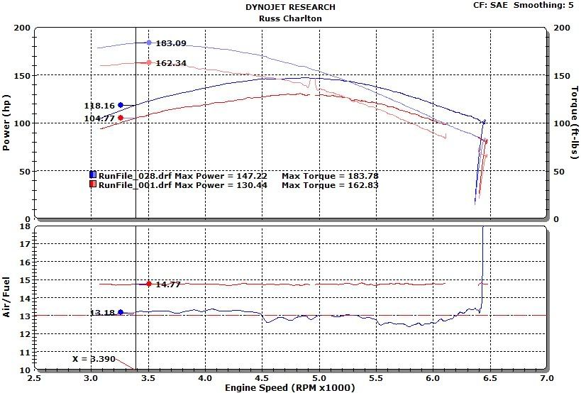
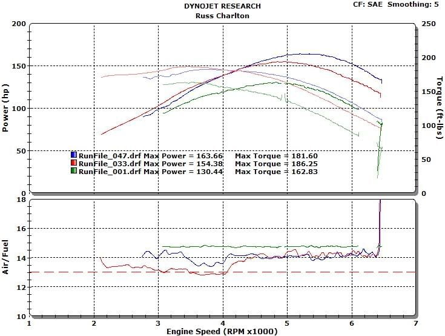
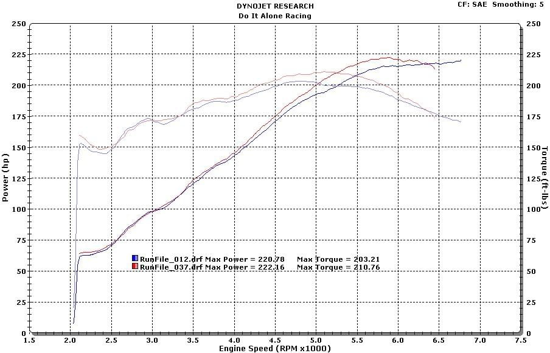

-
I was wondering if anyone knows if the MSA headers for a NA is california smog legal with a CARB number?
I tried emailing them and I havent got a response.
Thanks.My Build Thread -
Their not Smog legal. I've owned both the MSA headers and the pacesetter headers (personally found the MSA to be better quality). As far as I know their doesn't exist a smog legal set. And honestly they don't respond very well with our 9.1 compression ratio. Their not really worth installing unless your planning on building a VG30E with high compression pistons.1988 300zx 2+2 non-turbo (First Car)(Junkyard)
1987 300zx turbo 5-speed (Red Comet)(SOLD)
1988 300zx non-turbo Auto (SOLD)
1984 300zx non-turbo slicktop (Junkyard)
1988 300zx Turbo Auto (SOLD)
1987 300zx non-turbo 5-speed (SOLD)
1989 300zx non-turbo 5-speed (Current Car)
sigpic -
on ebay they advertise 50 state legal, for pace setters. DO you have any info on them?
Im just trying to find other ways to not spend money on a na2t setup =)My Build Thread -
with intake, and a full exhaust, they respond just as well as headers do on most other cars. I've seen a jump from 130whp to 165whp with just basic bolt ons, intake, headers, high flow cat, 2.5" cat-back, and advanced ignition timing. You can probably see more if you tuned with nistune, although the NA tune is pretty decent. Cams + headwork will yield a bit more, but at this point..yeah, you're still 9:1.tpollingerz31 wrote: Their not Smog legal. I've owned both the MSA headers and the pacesetter headers (personally found the MSA to be better quality). As far as I know their doesn't exist a smog legal set. And honestly they don't respond very well with our 9.1 compression ratio. Their not really worth installing unless your planning on building a VG30E with high compression pistons.- VG30DET (HE341) 86 300ZX - 1982 280ZX Turbo - Headered NA 1986 300ZX 2+2 - 2000 Xterra - -
Don't let them fool you by saying (Has all hook-ups for smog and engine management sensors).862sik wrote: on ebay they advertise 50 state legal, for pace setters. DO you have any info on them?
Im just trying to find other ways to not spend money on a na2t setup =)
What that means is that the headers come with the factory EGR, AIV, and O2 hook-ups. MSA's headers are also advertised by saying "Has all hook-ups for smog" but it really just means the pipes have the factory smog equipment flanges welded on for easy installation. Their not in any way smog exempt period.
I've personally owned them and I even called Pacesetter to confirm if they were. To date they are not legal, and hell if they were smog legal you'd be paying at least twice the price. Companies often don't like getting involved with CARB certs. It cost manufacturers precious money to test the product and then to keep the CARB number they have to pay fees every year! Hence this is why smog exempt parts are less common and come with a hefty price tag.
I've spent way too much money on N/A parts for very little results. I heard people claim their getting up to 30 more rwhp with simple bolt ons but I have yet to see a dyno jet before and after test. If you want my honest opinion go turbo. Jason and many others like myself have gone the N/A route as well with limited gains to show for tons of money! The VG30 is a awesome motor with boost. Boost is the quickest way for an engine to reach volumetric efficiency point blank. Now if you live in cali like I do I wouldn't recommend NA2T. As far as smog is concerned the tester will more than likely frown on the added turbo and report to the DMV that you TAMPERED with your car. That happened to me with my 2+2. You'd have to swap the whole motor from a turbo that is the same year as yours or newer and then have a State Rep certify your swap. Just buy a turbo 300zx it's way easier, or go the NA2T way and take the turbo off every two years for smog! Either way those are your options. Trust me once you've driven a turbo car you will become addicted that I can assure you!1988 300zx 2+2 non-turbo (First Car)(Junkyard)
1987 300zx turbo 5-speed (Red Comet)(SOLD)
1988 300zx non-turbo Auto (SOLD)
1984 300zx non-turbo slicktop (Junkyard)
1988 300zx Turbo Auto (SOLD)
1987 300zx non-turbo 5-speed (SOLD)
1989 300zx non-turbo 5-speed (Current Car)
sigpic -
[quote]tpollingerz31 wrote:I recalled ONE dyno with 20hp more with the headers. But he did a little more with his cam timing and such.Originally posted by 862sik
Well from what I understand in california, na2t should be possible as long as everything smog wise is passed over to the motor, then get it reffed? I just got my smog licence so maybe ill smog it myself =) hahhaahahahahhaahahahah. But I dont know if I will be doing smog in 2 years so I wont count on that.
I would love to go na2t but my money is tight on unemployment. I only have cash for some toys, and not all. If I were to go na2t Id want wideband, nistune, boost guage, and lsd. Something that is unreachable =/My Build Thread -
Just save up and go turbo, trust me it's well worth the wait. :twisted:1988 300zx 2+2 non-turbo (First Car)(Junkyard)
1987 300zx turbo 5-speed (Red Comet)(SOLD)
1988 300zx non-turbo Auto (SOLD)
1984 300zx non-turbo slicktop (Junkyard)
1988 300zx Turbo Auto (SOLD)
1987 300zx non-turbo 5-speed (SOLD)
1989 300zx non-turbo 5-speed (Current Car)
sigpic -
[quote]862sik wrote: [quote=tpollingerz31]This is a base line pull for a bone stock VG30NA. I bought the car new in 84, it had less than 100K on it when I did the pull. I got the same results on an 84 slicktop with 206K miles on it.Originally posted by 862sik

This is the base line in red. The blue is with K&N filter, MSA headers, free flow cat and magna flow muffler with custom 2 1/2" exhasut

This is the base line in green, Red and blue lines are with the same bolt on mods as above except the red is with adjustable cam gears at 3* retard and the blue is at 5* retard.

The last is when you go all out NA
…and how much HP do you have at 0 boost -
I'm glad to see someone actually dyno this setup very nice. So with basic bolt ons your looking at about 17 more horses and about 20 ftlbs. Thats what I would expect. Now with adjustable cam gears your looking at 24 horses and 14 ftlbs with 3 retard, 33 horses and about 20 ftlbs with 5 retard. As expected with retarding the cams you sacrifice street torque for additional horsepower. Also it seems that with 2.5in exhaust tubing your exceeding exhaust gas velocity. If you ran 2 1/8th piping I'd expect you'd see a better torque across the board which for a street engine is all the difference. Your last dyno graph is confusing though. What mods were employed their to make over 200 rwhp? I would expect the above mods with properly sized cams and a good tuning. Anyways good job with the dyno graphs.1988 300zx 2+2 non-turbo (First Car)(Junkyard)
1987 300zx turbo 5-speed (Red Comet)(SOLD)
1988 300zx non-turbo Auto (SOLD)
1984 300zx non-turbo slicktop (Junkyard)
1988 300zx Turbo Auto (SOLD)
1987 300zx non-turbo 5-speed (SOLD)
1989 300zx non-turbo 5-speed (Current Car)
sigpic -
[quote]862sik wrote: [quote=tpollingerz31]You could easily afford an NA2T conversion. I know plenty of people that would pay you extra for one of your smog tests ;-)Originally posted by 862sik1986 NA - Purchased by me in December 1985
Working on VG33 - NA to Turbo
Tokico Illuminas w/ Eibach Springs
88SS Sways -
These ought to cover it if you haven't found them alreadytpollingerz31 wrote: I'm glad to see someone actually dyno this setup very nice. So with basic bolt ons your looking at about 17 more horses and about 20 ftlbs. Thats what I would expect. Now with adjustable cam gears your looking at 24 horses and 14 ftlbs with 3 retard, 33 horses and about 20 ftlbs with 5 retard. As expected with retarding the cams you sacrifice street torque for additional horsepower. Also it seems that with 2.5in exhaust tubing your exceeding exhaust gas velocity. If you ran 2 1/8th piping I'd expect you'd see a better torque across the board which for a street engine is all the difference. Your last dyno graph is confusing though. What mods were employed their to make over 200 rwhp? I would expect the above mods with properly sized cams and a good tuning. Anyways good job with the dyno graphs.
viewtopic.php?f=1&t=17659
viewtopic.php?f=13&t=16955…and how much HP do you have at 0 boost -
So are msa headers on a NA better than the stock bs ? ,.,,, regardless of CARB … -
If you live in CA I wouldn't try to mess with headers, there are just too many rules that would need to be broken to get a smog test and after they started throwing guys into jail for f#$#ing with smog nobody out there will not unless you plan to part with about 1k for the favor and remember this is every other year. I agree with folks unless you bought this car new (hey Russ your the only person I have seen that bought a 84' new like I did) I would look for a used Turbo and then sell your NA. After 35+ years of ownership I gave up about 20 years ago of dreaming of a Turbo swap, too many moving parts. I just settled for setting up the car with the best suspension that wasn' too crazy stiff but comfortable, cold air intake and cat back and enjoy the ride. Also a kick butt stereo
-
I have an 87 turbo … I live in Tahoe ,,, I havent done a smog on 25 years … ( just when I buy or sell ) ,,,
I'm thinking of thinking my NA to another level … that and taking up welding my own headers ( turbo and NA ) … -
No smog tests in Tahoe? That is lucky man.

Copyright © 2006–. All rights reserved. Privacy Policy